Act I · Origin
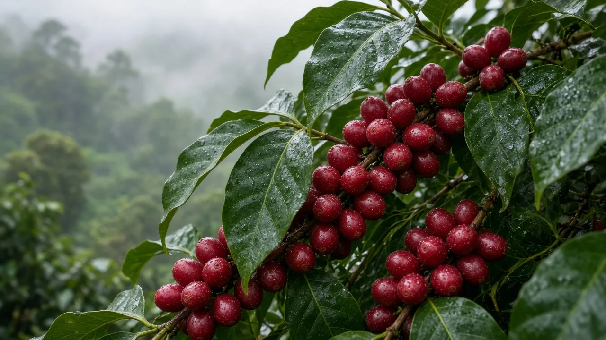
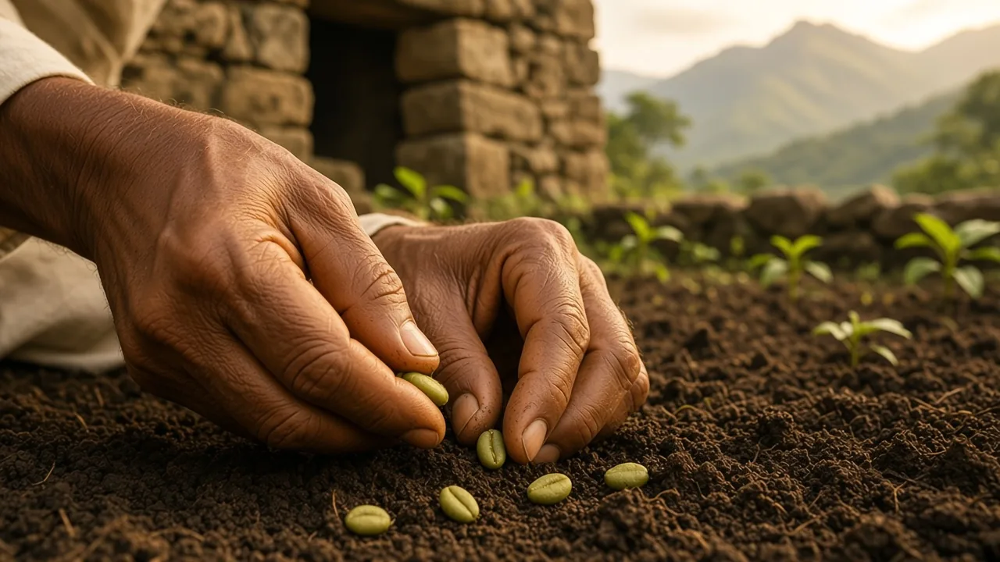
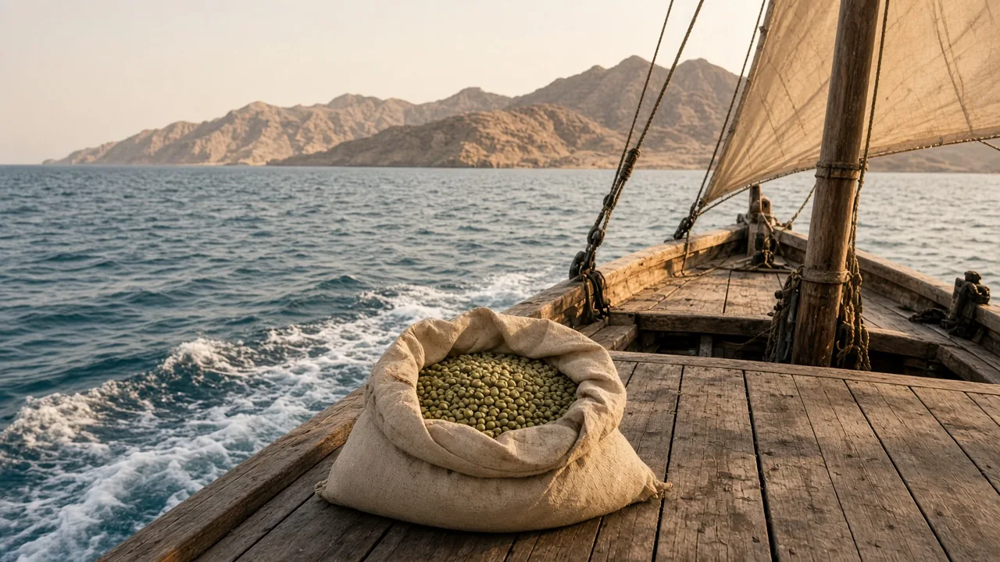
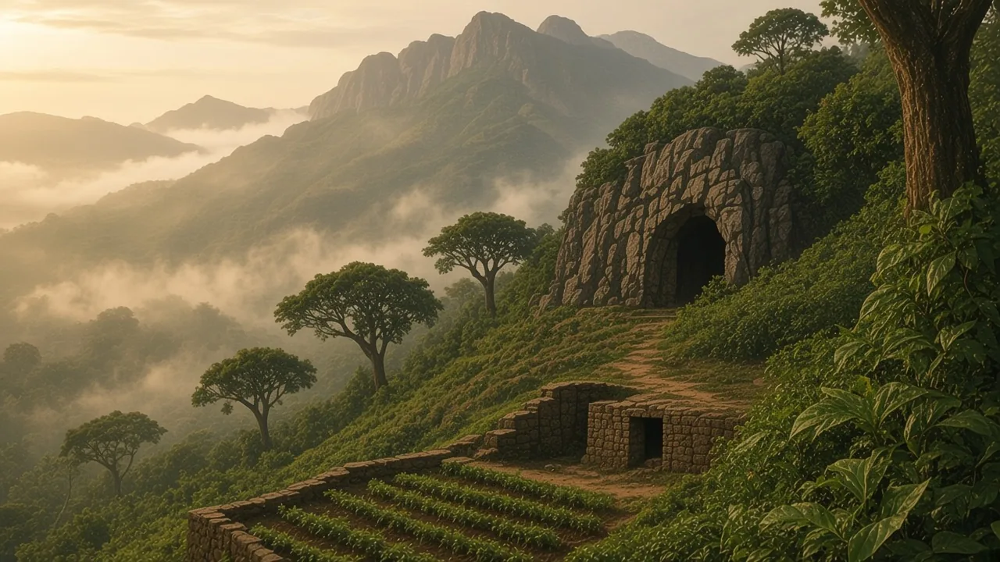
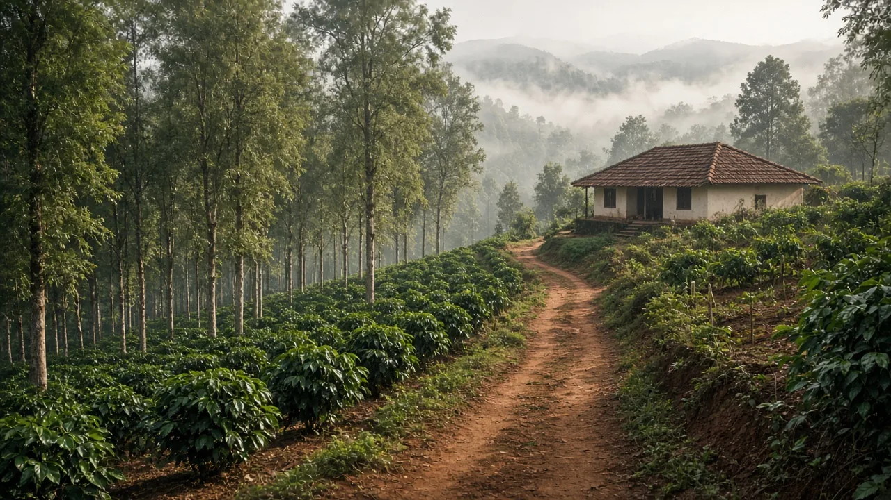
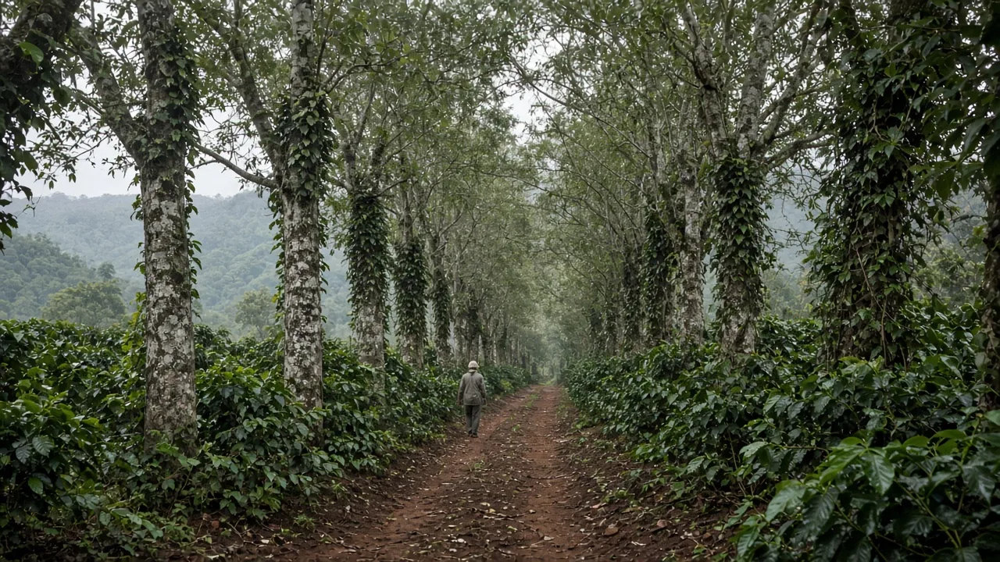
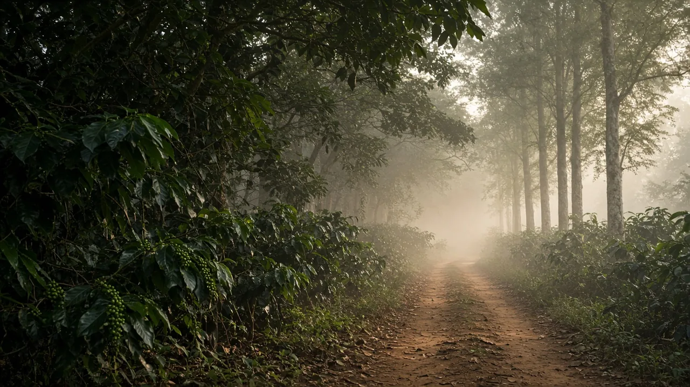
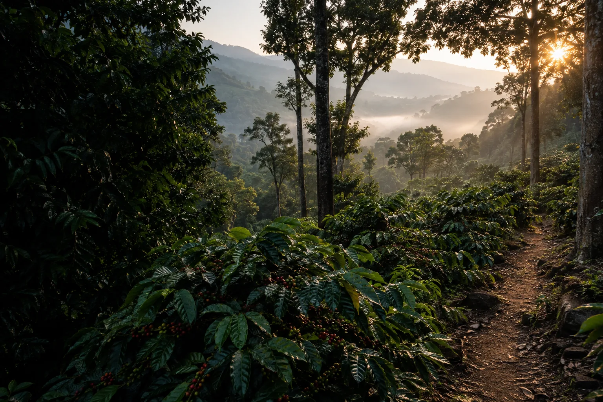
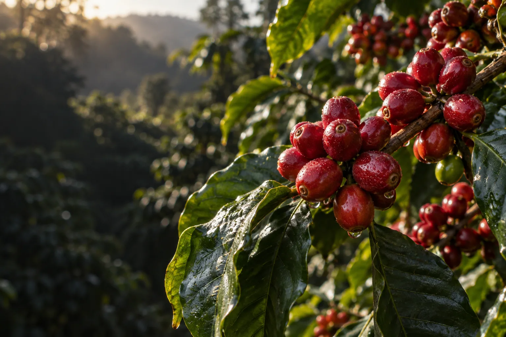
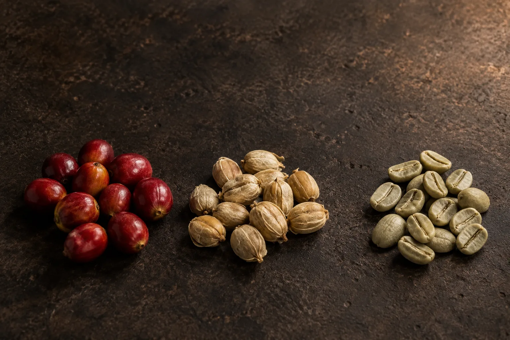
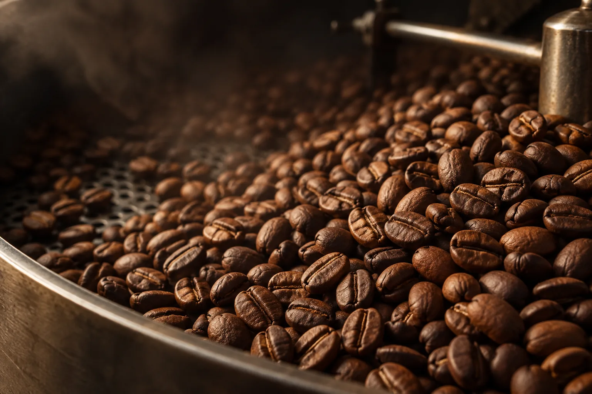
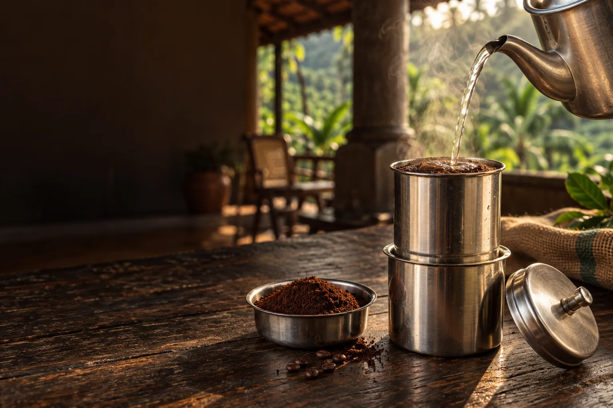
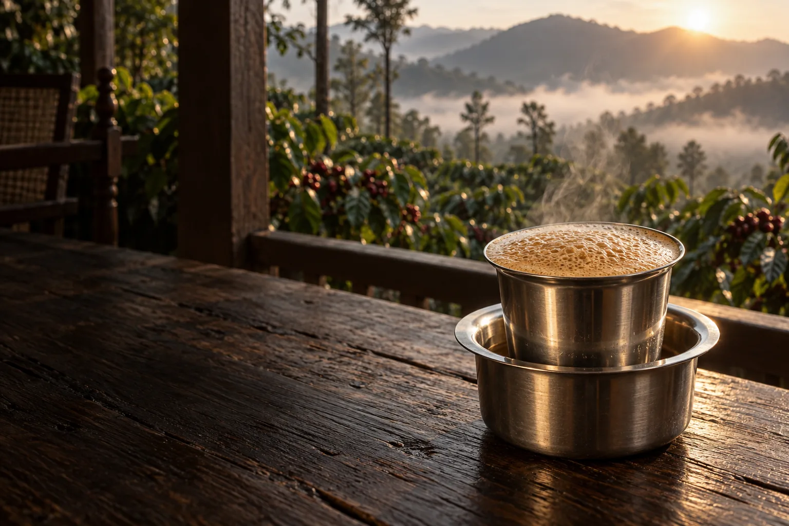
00 · The saint
Baba Budan, the name on this ridge
Coffee did not arrive in this district as a cup. It arrived as a story about a Sufi: seven Mocha seeds, carried home and set in courtyard earth on Chandra Drona.
The years disagree. The ridge does not. This page is not a shop. Two acts: first the saint, then the crop as it is still grown and drunk here.
Companion still of Baba Budan. No period portrait is known.
01 · The plant
A shrub that liked mist
Before it was a cup on the Chikkamagaluru bus, coffee was a red cherry in highland weather, a shrub that preferred cloud to open sun.
What took root on Chandra Drona is still that same highland thing: shade-hungry, slow, and particular about rain.
Companion still, wild arabica in highland mist. Imagined landscape, not a field survey of Ethiopia.
02 · Mocha
The harbour that sold the cup
On the Yemeni shore, Mocha became the name people used when they meant coffee itself. The city sold the roasted drink freely enough. Live seed was another matter.
Keep the tree at home, and the world stays a customer. What left that harbour as cargo was meant to be drunk, not planted.
Companion still, Mocha harbour, dhows, and sacks of cherry. Not a historical survey of the port.
03 · Seven seeds
A courtyard on this ridge
Then a Sufi from these hills is said to have come home with seven Mocha seeds and set them in the courtyard of his hermitage on Baba Budan Giri. Some tellings put that planting near 1600. Others nearer 1670.
The years argue. The ridge does not. It still carries his name, and the trees still like the same mist.
Companion still, seven Mocha seeds in courtyard earth. Not a reconstruction of a dated planting.
04 · The Hajj loreLore
What the hills still tell
The story that travels with the seeds is a smuggler's story: seven raw beans, because seven is sacred, tucked away so a port would not notice a future forest leaving in a pilgrim's clothes.
No ship's book confirms it. The district tells it anyway. Believe the slope. Treat the beard as lore.
Companion still of the voyage lore. Not a reconstruction of a dated crossing. Lore.
05 · Chandra Drona
A garden before it was a crop
Those first plants did not become a landscape overnight. For a long time they were a curiosity in courtyard earth, a few trees behind a house, not yet the silver-oak rows on the Charmadi road.
Chandra Drona held a garden before it held an estate. The shrine is still on that ridge. The crop learned patience here.
Companion still, a cave hermitage and seedling terraces. Imagined courtyard, not a measured plan of the shrine.
06 · Estate country
When the forest learned rows
Rows came later. In the 1820s planters opened country beside this same ridge, and the crop walked on into Wayanad, the Shevaroys, the Nilgiris.
What had been a hermitage tree became a hillside of labour, shade measured, paths named, a bungalow on the shoulder of the hill.
Companion still, early shade rows and a ridge bungalow. Not a portrait of any working property.
07 · Shade work
What you see from the bus
Look out between Mudigere and Balehonnur and you are looking at work: two roofs of shade, pepper on the trunks, arabica underneath. Karnataka still grows the largest share of the Indian crop.
In 1925 an experiment station opened near Balehonnur. The green you photograph from the window is someone's season.
Companion still, silver-oak shade, pepper vine, and a working path. Not a photograph of CCRI.
08 · This companion
Walk as a guest
This page will not sell you a cupping, a bungalow, or a jeep through someone else's silver oak. If a planter opens a path, that is their door. Stay on it.
The seven seeds are a story people keep. The canopy is a living crop in a living forest. Drink the cup. Leave the rows as you found them.
Companion still, a quiet path under coffee. This page does not sell a stay or a tour.
09 · Shade
A path the canopy keeps
The crop begins where the tar road stops. Arabica sits under silver oak. Mist still hangs in the valley. The path is wet from last night’s rain.
Chikkamagaluru coffee is a shade crop. The hill prefers cloud to open sun. This companion does not sell a tour of anyone’s estate.
Shade-grown arabica at first light, silver oak, mist, a dirt line through the rows.
10 · Cherry
The bean still dressed as fruit
Coffee is not a cup first. It is a red fruit in the leaf. The skin is sweet. Inside sit two seeds, pressed together like palms.
Pickers wait for that colour. Green cherries taste thin. This is not a recipe. It is the plant, still on the hill.
Ripe arabica cherries on a living shrub, dew on the skin, green fruit still waiting.
11 · Seed
Three names for one seed
Strip the fruit and a pale husk remains. Dry that, and you hold a green bean. Cherry, parchment, green, three names, one journey.
Mills still do this work in the district. This page does not name a brand or a price.
Cherry, parchment, green bean, one seed counted three ways on a mill table.
12 · Fire
The drum that names the cup
A green bean has almost no smell. Fire draws the sugar out. Only then does the seed begin to sound like a cup.
Roast is local taste, not a single law. What you see here is the drum, the turn from plant to the filter on a verandah.
A roasting drum at work, steam, sugar browning, the smell that people call coffee.
13 · Filter
Two steel barrels, hot water
Malnad drinks it this way: grounds in the upper barrel, decoction collecting below. Steam is the clock.
This is house coffee, not a café list. The companion will not sell you a cup.
South Indian filter on an estate table, grounds, hot water, the slow drip.
14 · Filter coffee
Filter coffee, and the hill still there
Here the cup is filter coffee. Milk is a household choice. The hill is still in the window.
From seven Mocha seeds to this metal is one walk. Not a shop. The saint first. Then the crop.
Filter coffee in steel, the estate still in the frame, first light on the shrubs.
Close
Drink. Leave the rows.
From seven Mocha seeds to filter coffee is one walk. This page is not a shop. Believe the slope. Treat the beard as lore.